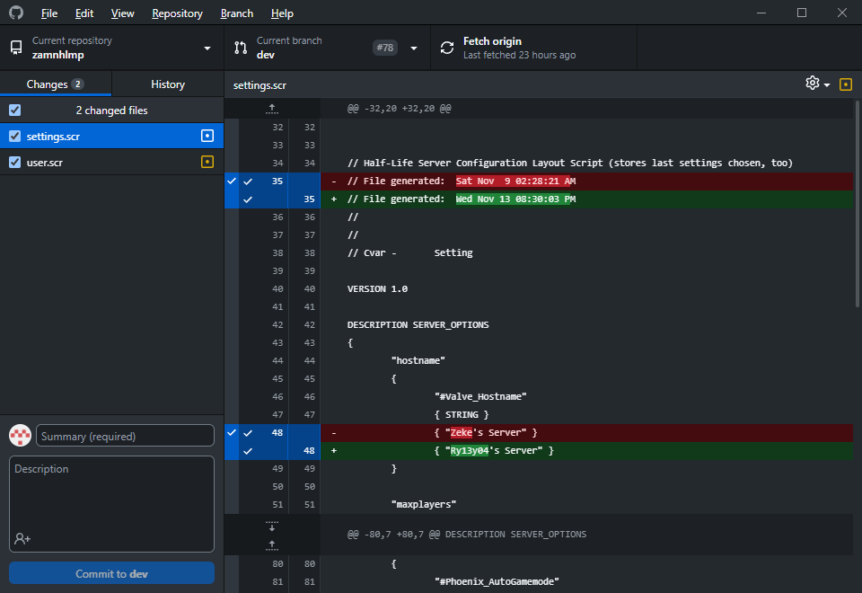
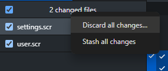
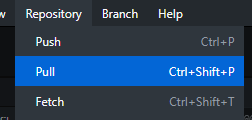

You'll be the first to know when our repositories get updated with lots of new commits, because we have notification channels in our Discord Server for each of our projects. Now, when it comes to updating your local copy of the game with these commits, there's a couple of procedures you need to take.
Unfortunately, due to the way the Half-Life 1 Engine works, it creates junk files each time you play the game that we can't always untrack. You'll see these appear in the Changes section of GitHub Desktop.

Before you can update you must discard these to avoid any conflicts. Right click the changed files counter and click Discard all changes.

Now, you can update! To do this, just go to Repository > Pull. That's it. The rest is done for you.
If you have any conflicts, and you don't know what to do, contact Sabian or Ryley in the Phoenix Discord.
